Overview
I implemented a rasterizer that is capable of taking in simple SVG files and producing images by rendering each of the triangles created by the vectors stored in the file. The overall quality
of the image also depends on the type of methods used. Some examples of this include supersampling pixels for antialiasing or applying different interpolation methods to pixels for texture mapping via mipmap.
This rasterizer is also capable of applying hierarchical transforms. What I learned from this assignment is how the most complex sampling method(s) doesn't always result in a better image. For example,
I found that with trilinear sampling, some of the images in ./svg/texmap would turn out a bit too blurry in comparison to how they would turn out when using nearest neighbor sampling. This is because of how
with trilinear sampling, lower levels of resolution are favored, which results in a blurrier image. I also learned how to do trilinear sampling properly. Initially, I was interoolating
with the entire value of level when I should have been interpolating with the decimal portion instead (if level = 3.5, then linear interpolation should be done with .5).
Section I: Rasterization
Part 1: Rasterizing single-color triangles
My implementation for rasterizing single colored triangles only checks points within the bounding box of the triangle. The bounding box is formed with the bottom left corner of the
box equal to (minimum x of triangle vertices, minimum y of triangle vertices). Likewise, the upper right corner is equal to (maximum x of triangle vertices, maximum y of triangle vertices).
For any pixel not inside the triangle, the color is still white. For pixels inside the pixel, their color is equal to the input color for the triangle. Also, because the triangle is not guaranteed to
have a counter-clockwise winding order, I compute a cross product with (p1 - p0) and (p2 - p0). If the product is less than or equal to 0, then that means the triangle is winding in clockwise order.
To have the triangle wind in counterclockwise order, I flip the signs on all the dX's and dY's, where dX_i = x_{i + 1} - x_i (the same applies for dY_i). I then use the line tests as described in lecture
to determine whether or not a pixel lies within the bounds of the triangle.
|
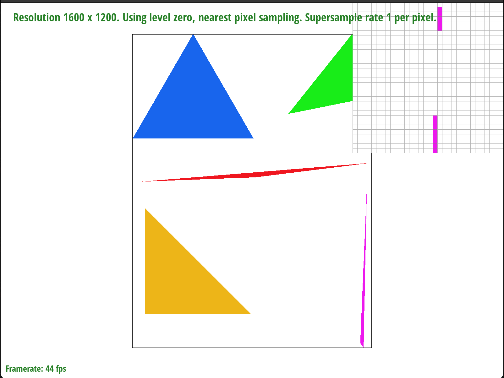
test4.svg; Zoom-in is on the tip of the rightmost triangle, where the pixels of the tip are detached from the rest of the shape.
|
Part 2: Antialiasing triangles
My initial implemention of rasterizing single colored triangles only sampled once per pixel. Here, it has been updated to support antialiasing via supersampling. The sample buffer
is resized to be sample_rate * width * height, which means that each pixel now gets {sample_rate} samples. The algorithm was updated to split each pixel into {sample_rate} equal subpixels.
The line test is done on each subpixel, and if the subpixel lies within the triangle its color in the sample buffer is set to be the input color. When the frame buffer is filled with data from the
sample buffer in resolve_to_framebuffer(), an average of the RGB values for each pixel's supersamples is computed. The resulting RGB value is the color for the whole pixel. While this works fine for triangles, lines and points
do not need to be supersampled in this way. That is why when their sample_buffer colors are updated, the fill_pixel function is updated to have all subpixels for a line or point pixel to be equal
to the input color. Initially, I tried to apply some optimization by directly computing the average RGB in rasterize_triangle() in order to not have to increase the size of the sample buffer and reduce the number of iterations
used. However, I ultimately decided to go for simplicity and went with allocating space for all the supersamples and then computing the average RGB for each pixel in resolve_to_framebuffer().
|
test4.svg with sample_rate = 1; Zoom-in is on the tip of the rightmost triangle, where the pixels of the tip are detached from the rest of the shape.
|
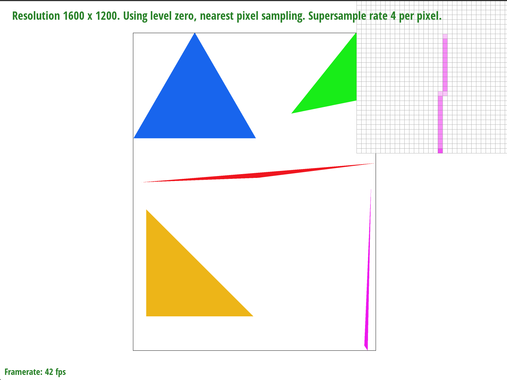
test4.sv with sample_rate = 4; Zoom-in is on the tip of the rightmost triangle, where supersampling renders the rest of the pixels that attach the triangle tip
to the rest of the shape.
|
|
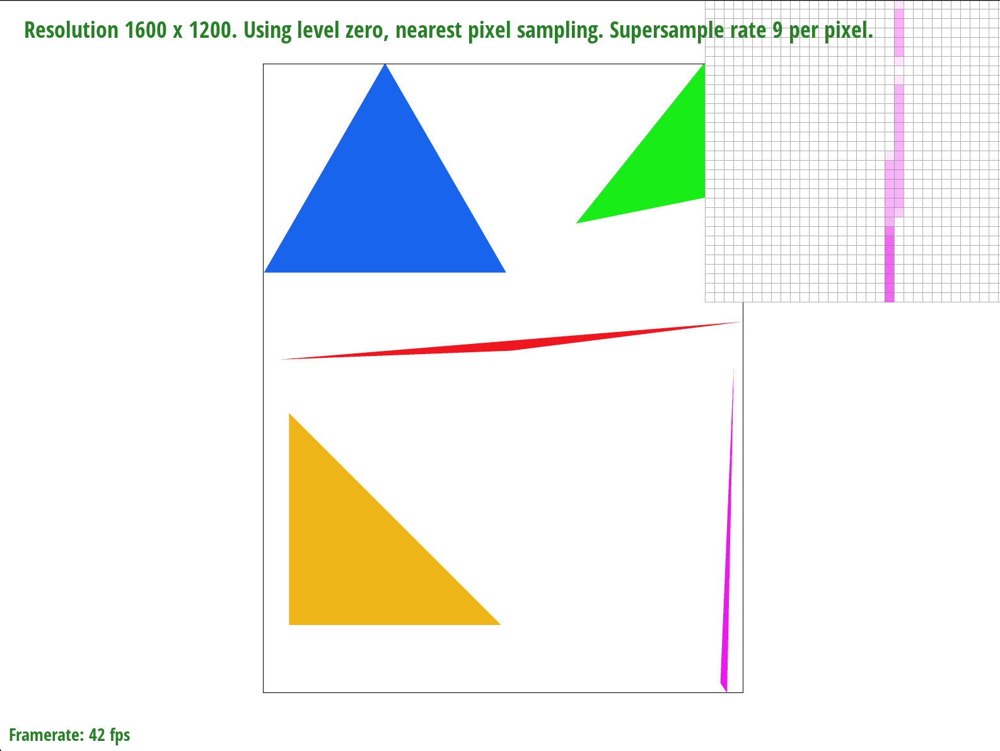
test4.svg with sample_rate = 16; Zoom-in is on the tip of the rightmost triangle, where the tip of the triangle is slightly extended.
|
In the images above, the reason why the area near the tip of the triangle is more complete when supersampling at a higher rate than 1 is because pixels that were considered to not be entirely within
the triangle lines, which with sample_rate = 1 were very narrow. However, by supersampling, we can take into consideration parts of the pixel that are within the triangle lines and render an "averaged" color
based on how many of the pixel's subpixels are within the triangle, which results in the triangle tip being fully rendered when examining the pixels.
Part 3: Transforms
This part was the simplest to implement. For translation, I initialize a 3x3 identity matrix and set the first 2 entries of the last column to be equal to dx and dy respectively.
For scaling, I initialize a 3x3 identity matrix and set the first 2 diagonals of the matrix to be equal to sx and sy respectively. For rotation, I initialize a 3x3 identity matrix
and set the upper left 2x2 box to be equal to [[cos(rad), -sin(rad)], [sin(rad), cos(rad)]], where rad = radians(deg) is the degree to rotate by in radians. For the cubeman svg, what I did was
apply transforms, which were mostly rotations and translations, to different parts of its body to make it look like it's running. No challenges were encountered in this part.
|
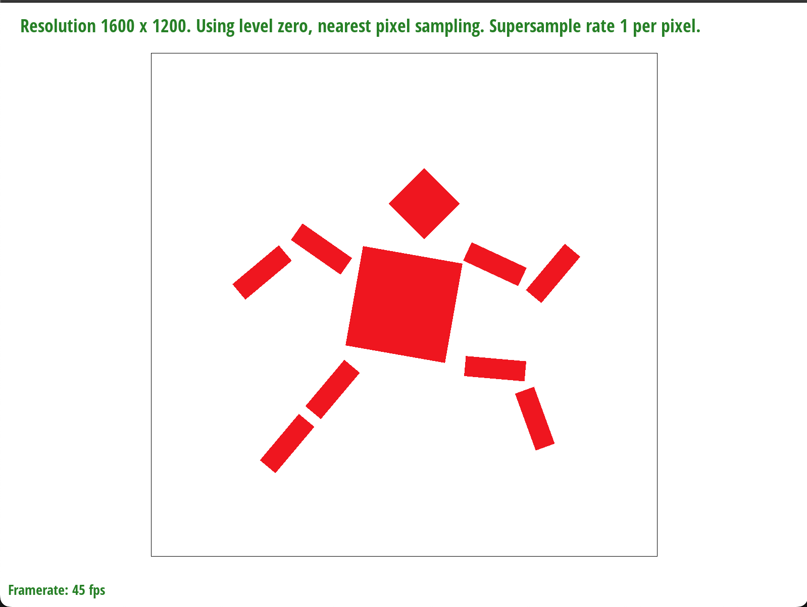
robot.svg; transforms have been modified to make the robot assume a running pose.
|
Section II: Sampling
Part 4: Barycentric coordinates
To me, barycentric coordinates allow us to give certain coordinates a "force". These vertices exert that "force" on surrounding points. The closer points are to them, the more influence that
they have over them. When we apply that to interpolated triangles, the closer a point is to a triangle vertex colored red, the more red it is going to be. The color wheel is a good example of this
idea. The triangle below illustrates this idea.
For drawing interpolated triangles, I still do the same line tests for each supersample as done in rasterize_triangle(). However, I now compute 3 values: alpha, beta, and gamma, which are calculated using the methods
described in lecture. The color for the current pixel is equal to the weighted sum of c0, c1, and c2, where the weights are alpha, beta, and gamma respectively. Each pixel has different values for alpha, beta, and gamma.
|
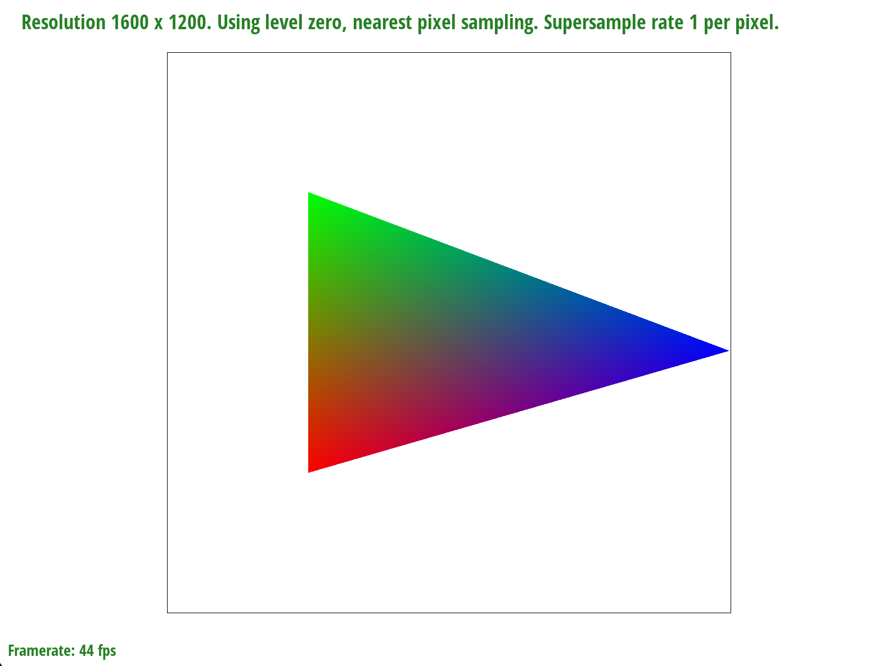
Interpolated triangle.
|
|
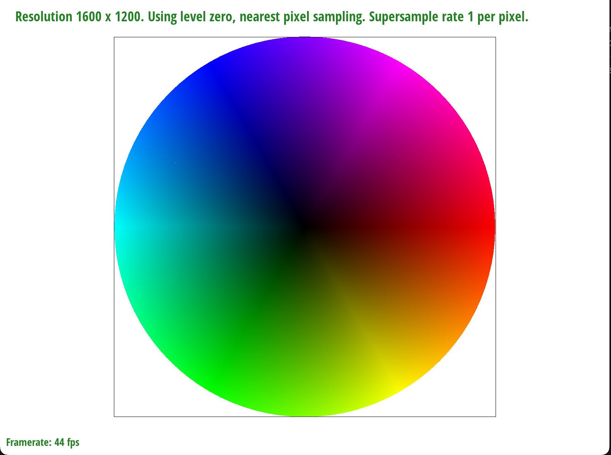
test7.svg (Disclaimer: there was a slight white streak on the color wheel that went away when the sampling rate was increased and then decreased. I am not
sure why this is the case since the sample buffer and frame buffer are both cleared when the image is redrawn.
|
Part 5: "Pixel sampling" for texture mapping
With pixel sampling, given a triangle we filter out pixels that are not enclosed by the triangle. We can also apply this to texture mapping, where we sample a texture for a
pixel. For this part, I repeat the same process done in part 4 for interpolated triangles. But instead of interpolating the color of the vertices, I compute the barycentric uv coordinates for the current subpixel, which is equal to
alpha * (u0, v0) + beta * (u1, v1) + gamma * (u2, v2). I also initialize a SampleParams struct sp. Here, I set sp.p_uv to be equal to the (u, v) coordinate that I just computed. I also set sp.psm = RasterizerImp.psm, which is used
to determine the type of pixel sampling used. Here, I either use nearest neighbor sampling, where the color of the subpixel is equal to the color of the nearest pixel in texture space. The second option is to use bilinear sampling. In both cases before I do any calculations, I scale
(u, v) by the dimensions of the texture map for the given mipmap level, which for this part is 0 by default.
|
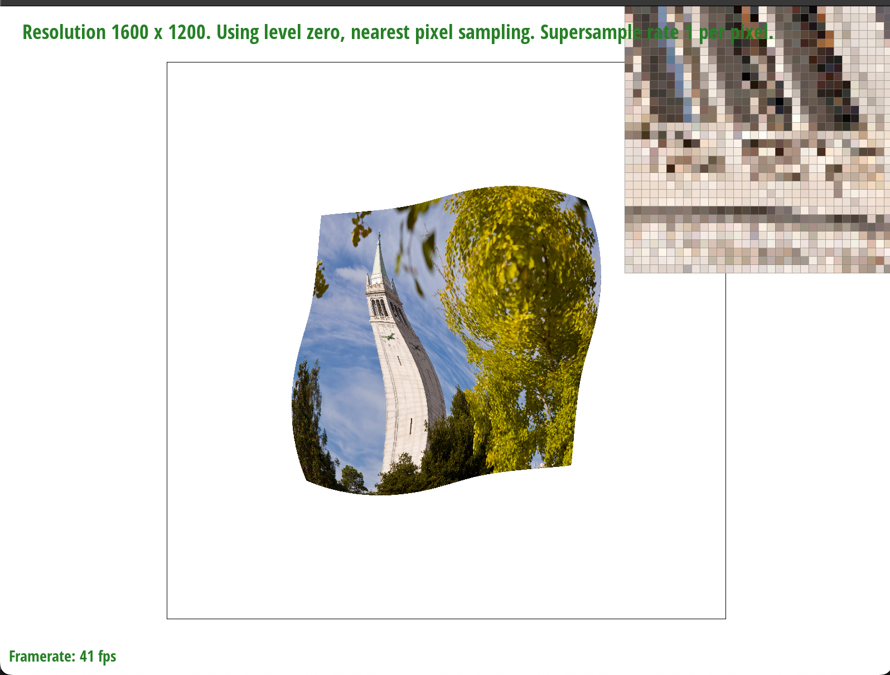
test6.svg with psm = P_NEAREST and sample_rate = 1
|
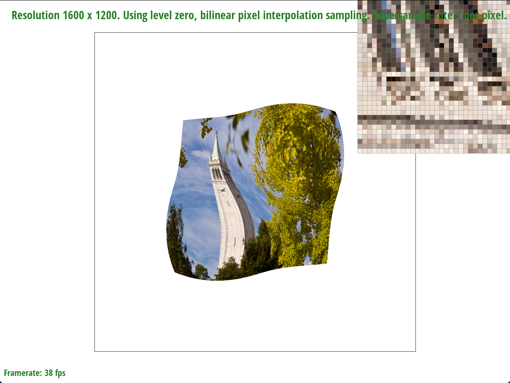
test6.svg with psm = P_LINEAR and sample_rate = 1
|
|
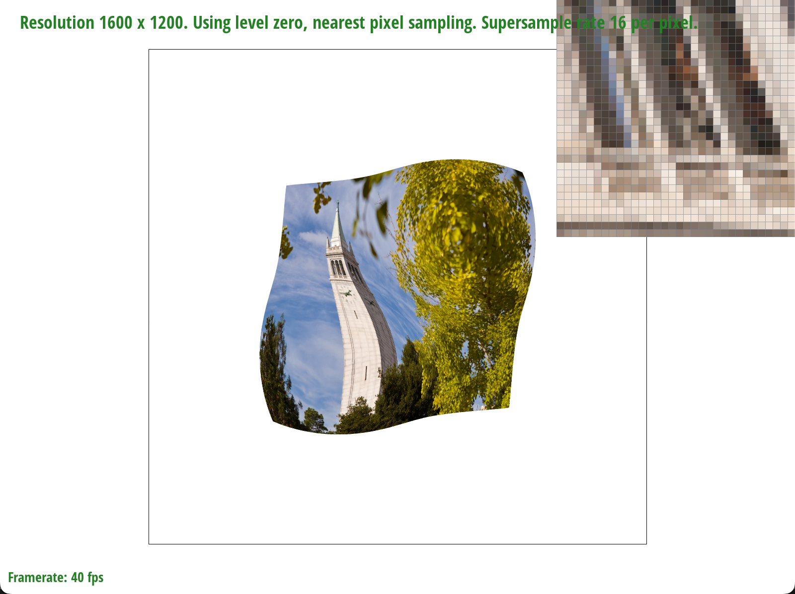
test6.svg with psm = P_NEAREST and sample_rate = 16
|
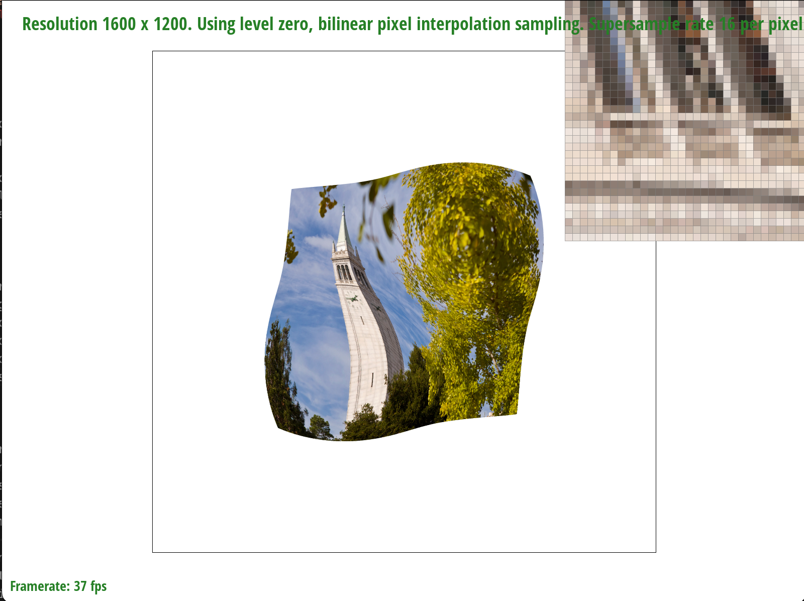
test6.svg with psm = P_LINEAR and sample_rate = 16
|
When comparing nearest neighbor vs bilinear interpolation for the Campanile, we can see that the bilinear sampling results in a slightly blurrier image than with nearest neighbor sampling.
Of course, this is harder to notice at a higher sampling rate since a lot of antialiasing is already done with supersampling. Generally, I believe the differences are more noticeable
with images that have more sharper edges.
Part 6: "Level sampling" with mipmaps for texture mapping
Sometimes we may not want a full resolution (mipmap level 0) image because the images may look too sharp. That is why sometimes sampling from other mipmap levels, which can result in a lower resolution image,
can also result in a smoother image. For this part, the rasterize_textured_triangle function now uses tex.sample, tex being the input texture struct, to supersample each pixel. Here, level sampling is now taken into
consideration with the type of pixel sampling done. The type of level sampling used is determined by RasterizerImp.lsm. The type of pixel sampling done is still determined by RasterizerImp.psm. For lsm = L_ZERO, I sample from level 0 of the mipmap. For lsm = L_NEAREST, I compute the level D using the methods described in the assignment spec and lecture. I then
clamp D to be in [0, mipmap.size() - 1]. I then round it to the nearest mipmap level to be used for sampling. For lsm = L_LINEAR, I also compute D using the same method, but in this case I do not round it. The first level that I use
is level1 = floor(D). The second level is level2 = min(level1 + 1, mipmap.size() - 1) = D + 1, where I clamp D + 1 to be no greater than the maxumum mipmap size. I then compute 2 samples c1 and c2 using D and D + 1 respectively. Finally, I compute lerp(level - level1, c1, c2) as the color
sampled for the current pixel.
With all the different sampling methods that we have, they all have their trade offs. For example, supersampling can produce smoother images. However, it comes at the cost of speed due to having to sample multiple times
per pixel and allocating more memory for each supersample. With nearest neighbor pixel sampling, while it is the most efficient, sometimes it may not produce smooth surfaces for textures. Bilinear sampling on the other hand
can produce smoother surfaces at the cost of slower runtime since more computations are involved.
|
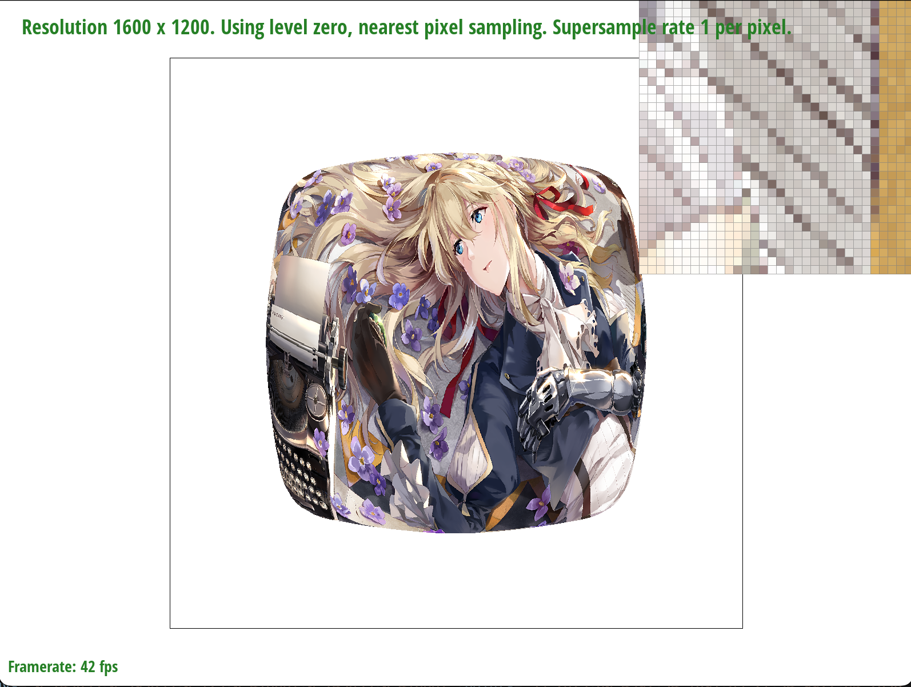
Violet Evergarden with LSM = L_ZERO and PSM = P_NEAREST
|
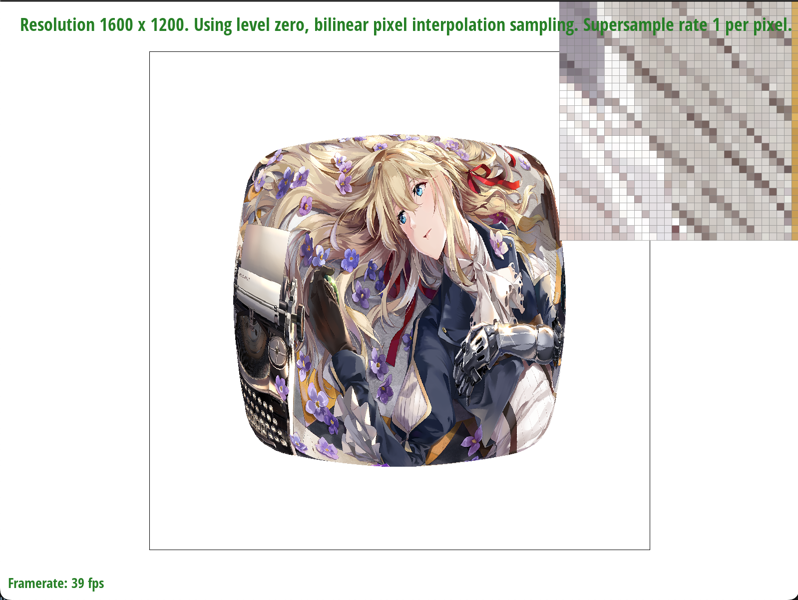
Violet Evergarden with LSM = L_ZERO and PSM = P_LINEAR
|
|
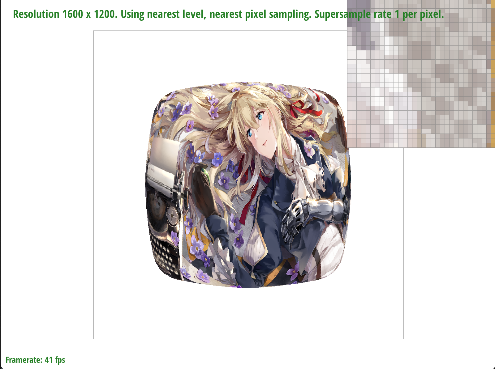
Violet Evergarden with LSM = L_NEAREST and PSM = P_NEAREST
|
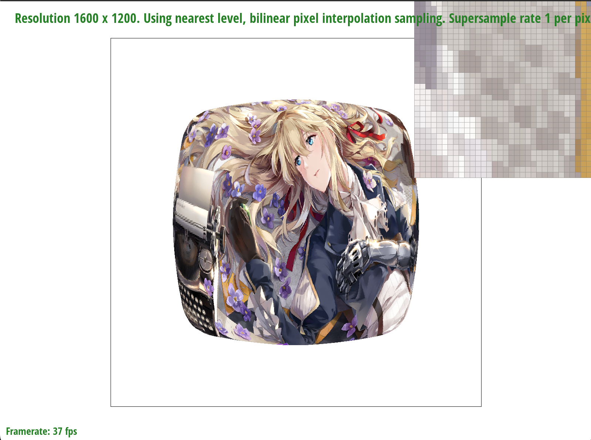
Violet Evergarden with LSM = L_NEAREST and PSM = P_LINEAR
|
Section III: Art Competition
If you are not participating in the optional art competition, don't worry about this section!
Part 7: Draw something interesting!